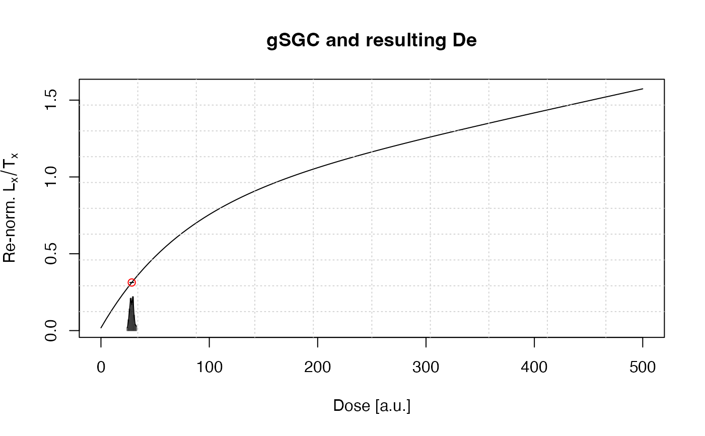

Function returns De value and De value error using the global standardised growth curve (gSGC) assumption proposed by Li et al., 2015 for OSL dating of sedimentary quartz
calc_gSGC( data, gSGC.type = "0-250", gSGC.parameters, n.MC = 100, verbose = TRUE, plot = TRUE, ... )
| data | data.frame (required):
input data of providing the following columns: |
|---|---|
| gSGC.type | character (with default):
define the function parameters that
should be used for the iteration procedure: Li et al., 2015 (Table 2)
presented function parameters for two dose ranges: |
| gSGC.parameters | list (optional):
option to provide own function parameters used for fitting as named list.
Nomenclature follows Li et al., 2015, i.e. |
| n.MC | integer (with default): number of Monte Carlo simulation runs for error estimation, see details. |
| verbose | logical: enable or disable terminal output |
| plot | logical: enable or disable graphical feedback as plot |
| ... | parameters will be passed to the plot output |
Returns an S4 object of type RLum.Results.
@data
$ De.value (data.frame)
.. $ De
.. $ De.error
.. $ Eta
$ De.MC (list) contains the matrices from the error estimation.
$ uniroot (list) contains the uniroot outputs of the De estimations
@info
`$ call`` (call) the original function call
The error of the De value is determined using a Monte Carlo simulation approach.
Solving of the equation is realised using uniroot.
Large values for n.MC will significantly increase the computation time.
0.1.1
Kreutzer, S., 2021. calc_gSGC(): Calculate De value based on the gSGC by Li et al., 2015. Function version 0.1.1. In: Kreutzer, S., Burow, C., Dietze, M., Fuchs, M.C., Schmidt, C., Fischer, M., Friedrich, J., Mercier, N., Riedesel, S., Autzen, M., Mittelstrass, D., Gray, H.J., 2021. Luminescence: Comprehensive Luminescence Dating Data Analysis. R package version 0.9.11. https://CRAN.R-project.org/package=Luminescence
Li, B., Roberts, R.G., Jacobs, Z., Li, S.-H., 2015. Potential of establishing a 'global standardised growth curve' (gSGC) for optical dating of quartz from sediments. Quaternary Geochronology 27, 94-104. doi:10.1016/j.quageo.2015.02.011
Sebastian Kreutzer, Geography & Earth Sciences, Aberystwyth University (United Kingdom) , RLum Developer Team
results <- calc_gSGC(data = data.frame( LnTn = 2.361, LnTn.error = 0.087, Lr1Tr1 = 2.744, Lr1Tr1.error = 0.091, Dr1 = 34.4))#> #> [calc_gSGC()] #> Corresponding De based on the gSGC #> #> Ln/Tn: 2.361 ± 0.087 #> Lr1/Tr1: 2.744 ± 0.091 #> Dr1: 34.4 #> f(D): 0.787 * (1 - exp(-D /73.9)) + c * D + 0.01791 #> n.MC: 100 #> ------------------------------ #> De: 28.43 ± 1.92 #> ------------------------------#> DE DE.ERROR ETA #> 1 28.42881 1.919112 0.1325632